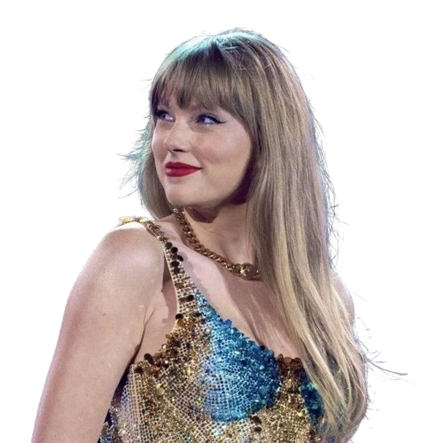
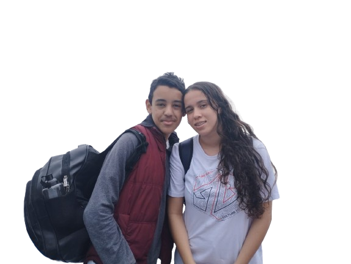
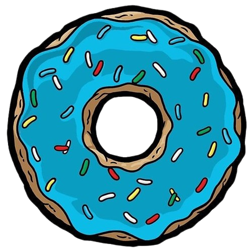

"Só não esquece a cabeça porque está colada no corpo"

Willian Leandro é um jovem apaixonado por música, encontrando inspiração em artistas como Taylor Swift e Melanie Martinez. Sua conexão com a arte do desenho é profunda, e ele se destaca pela criação de ilustrações marcantes que têm sido destaque em eventos escolares, como os realizados no Instituto Paulo Freire.

Além de sua expressão artística, Willian Leandro é um entusiasta ávido por séries e filmes, explorando uma vasta gama de gêneros e histórias para alimentar sua imaginação. Apesar de sua paixão pelas telas, às vezes ele enfrenta desafios para recordar os nomes específicos das produções que o cativam, o que apenas aumenta seu encanto despretensioso.

Nos momentos de lazer, Willian Leandro se entrega aos prazeres da culinária, especialmente quando se trata de doces com sabores intensos e notas amargas. Essa preferência singular reflete seu desejo de explorar novas experiências sensoriais e sua disposição para experimentar o inesperado.
Seu espírito curioso e sua habilidade de expressão através do desenho o tornam uma figura cativante entre amigos e colegas, sempre pronto para compartilhar suas perspectivas únicas e inspirar outros com seu talento artístico. Além de ter quatro cachorros lindos, chamados: Totó, Tedi, Tody e Lila.
Willian Leandro nasceu no dia 06/02/2009, e é um ótimo companheiro em todos os momentos, um garoto extremamente inteligente e doce. Por isso quem não o conhece deve imediatamente ir atrás de conhecer!
.png)